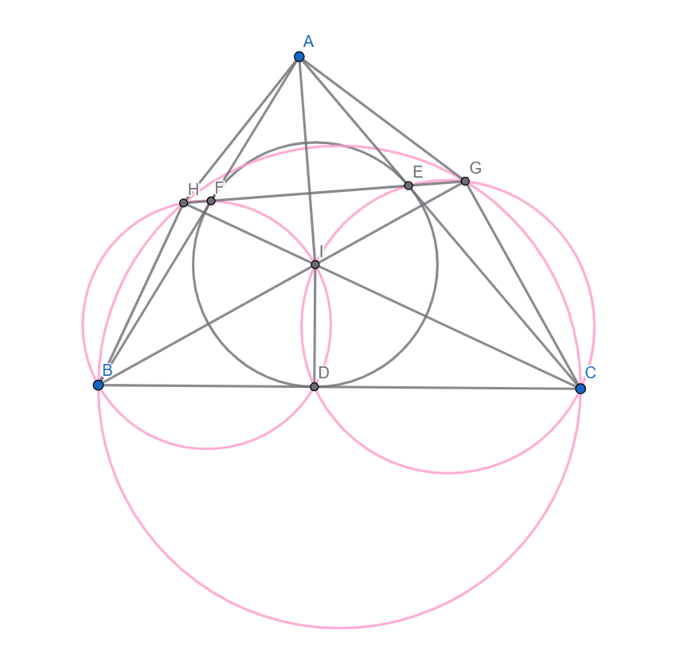
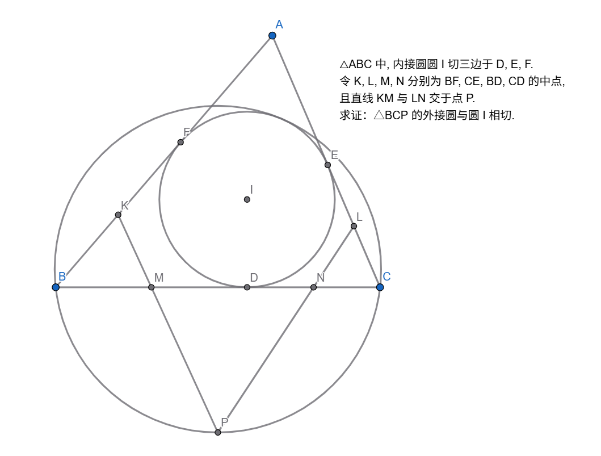
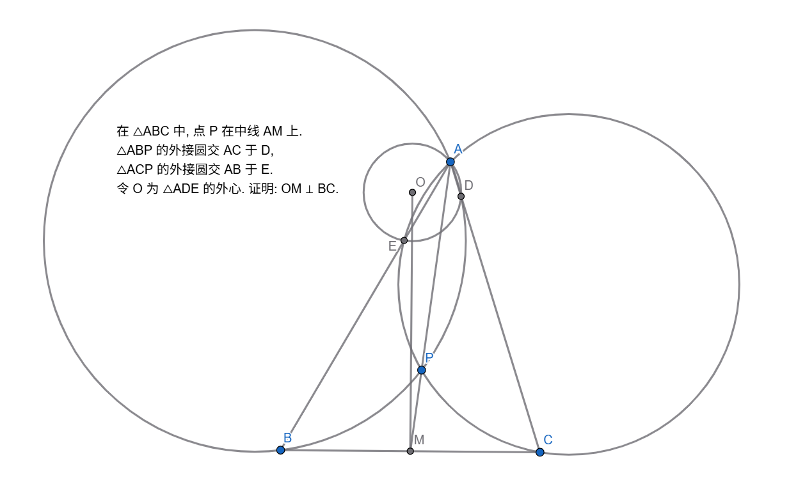

Geometry 1

Problem:
$△ABC$ 中, $H$ 为垂心, $D, E$ 在 $AC, AB$ 上, 满足 $DH⊥HC, EH⊥HB$, 过 $C$ 做 $BC$ 的垂线交直线 $DE$ 于 $F$.
证明：$HF=FC$.
Solution:

由 $DH⊥HC, HC⊥AB$ 知 $DH//AB$, 同理 $EH//AC$, 所以 $AEHD$ 是平行四边形.
由 $AH⊥FC, FC⊥BC$ 知 $AH//FC$.
令 $M$ 为 $AH$ 中点, HD 交 FC 于 G.
那么因为 $△AHD∽△CGD$, 且 $∠ADM=∠CDF$, 所以 $M, F$ 为两个相似三角形的相似对应点.
所以 $GF=FC$. 又 $∠GHC=\frac{\pi}{2}$, 所以 $FH=GF=FC$.
证毕.
Geometry 2

Problem:
$△ABC$ 的内切圆圆 $I$ 交三边于 $D, E, F$. 令 $BI$ 交 $EF$ 于 $G$, $CI$ 交 $EF$ 于 $H$.
证明：
(1)：$BG⊥GC, BH⊥HC$, 且 $BHGC, BHFID, CGEID$ 均共圆.
(2)：$S_{AHIG}=S_{BIC}$
Solution:
- (1):
事实上, 本结论是 Sawayama’s Lemma (沢山引理) 的特例, 即当大圆无穷大的情况.
由 $B$ 向 $IC$ 做垂线交 $IC$ 于 $H’$, $C$ 向 $IB$ 做垂线交 $IB$ 于 $G’$.
则 $BG’⊥G’C, BH’⊥H’C$, 且 $BH’G’C, BH’FID, CG’EID$ 均共圆.
下证 $G’=G, H’=H$.
由 $∠H’IB=∠H’FB=∠AFE=\frac{π-∠A}{2}=π-\frac{π+∠A}{2}=π-∠BIC$ 知 $H’, I, C$ 共线.
同理, $G’, I, B$ 共线. 所以, $G’=G, H’=H$, 证毕.
- (2):
令 $M$ 为 $EF$ 中点, 则 $IM \times IA=IF^2=IE^2=ID^2$.
$S_{AHIG}=\frac{1}{2} AI \times HG=\frac{1}{2} \times \frac{ID^2}{IM} \times HG = \frac{1}{2} ID \times (HG \times \frac{ID}{IM}) = \frac{1}{2} ID \times BC = S_{BIC}$.
证毕.
Geometry 3

Problem:
$△ABC$ 中, 内接圆圆 $I$ 切三边于 $D, E, F$. 令 $K, L, M, N$ 分别为 $BF, CE, BD, CD$ 的中点, 且直线 $KM$ 与 $LN$ 交于点 $P$.
证明：$△BCP$ 的外接圆与圆 $I$ 相切.
Solution:
由 $BK^2=KF^2, BM^2=MD^2$ 知 $KM$ 为点圆 $B$ 和圆 $I$ 的根轴,
同理, $LN$ 为点圆 $C$ 和圆 $I$ 的根轴.
所以, $P$ 为点圆 $B$, 点圆 $C$, 圆 $I$ 的根心.
所以, $P$ 对圆 $I$ 的幂恰好等于 $PB^2=PC^2$.
以 $P$ 为反演点, $PB^2$ 为幂进行反演. 则因为反演幂也是 $P$ 对圆 $I$ 的幂, 所以圆 $I$ 自反.
又 $△BCP$ 的外接圆反演为 $BC$, 且 $BC$ 与圆 $I$ 相切, 所以 $△BCP$ 的外接圆的像与圆 $I$ 的像相切,
所以 $△BCP$ 的外接圆与圆 $I$ 相切.
证毕.
Geometry 4

Problem:
$△ABC$ 的外接圆为圆 $O$, 垂心为 $H$, $BE$ 与 $CF$ 为两条高. 令 $AH$ 交圆 $O$ 于 $D$, 且 $AH$ 的中点为 $M$, $EM$ 交 $BD$ 于 $X$, $FM$ 交 $CD$ 于 $Y$.
证明：$OH ⊥ XY$.
Solution:

令 $BH, CH$ 分别交圆 $O$ 于 $P, Q$, $PA$ 交 $BD$ 于 $R$, $QA$ 交 $CD$ 于 $S$.
则因为 $QF=FH, AM=MH, PE=EH$, 所以 $AS//MY, AR//MX$,
所以 $\frac{DR}{DX}=\frac{DA}{DM}=\frac{DS}{DY}$, 所以 $RS//XY$.
对四边形 $QACD$ 用 Brocard’s Theorem (布洛卡定理), 得 $S$ 在 $H$ 的极线上. 同理, $R$ 在 $H$ 的极线上.
所以 $H$ 的极线是 $SR$, 所以 $OH ⊥ RS$. 又 $RS//XY$, 所以 $OH ⊥ XY$.
证毕.
Geometry 5
Problem:
$△ABC$ 中, $I$ 为内心, 圆 $O$ 为外接圆. 令 $AI$ 交圆 $O$ 于 $S$, $AH$ 为高, $HS$ 交圆 $O$ 于 $D$, 交 $AB$ 于 $F$. 令 $CD$ 交 $AI$ 于 $G$.
证明：$FG//BC$.
Solution:
事实上, $AH$ 为高是一个无用条件. 有时候, 出题人加上一个无用条件, 使得你无法从点的运动的方式去思考问题, 难度因此大增. 这时候, 你需要精准地判断出这个无用条件.
对 $ABCDSS$ 用 Pascal’s Theorem (帕斯卡定理), 得 $F$, $G$, $BC$ 与 $SS$ 的交点, 三点共线.
因此, $FG, BC, SS$ 三线共点, 而 $BC//SS$, 因此此点为无穷远点, 所以 $FG//BC$.
证毕.
Geometry 6

Problem:
$ABDC$ 为圆 $O$ 的内接四边形, $AD$ 交 $BC$ 于 $E$, $AC$ 交 $BD$ 于 $F$, 点 $G$ 满足 $CEDG$ 为平行四边形.
证明：$∠CFG=∠DFE$.
Solution:
你实在不会你也可以导正弦比. 但是这里说一种好的证法.
显然 $△FAB∽△FDC$, 且 $△ABE∽△CDE∽△DCG$,
所以 $FABE ∽ FDCG$, 所以 $△FCG∽△FBE$, 所以 $∠CFG=∠DFE$.
证毕.
Geometry 7

Problem:
Solution:
Geometry 8

Problem:
Solution:
Geometry 9
Problem:
Solution:
Geometry 10

Problem:
Solution:
Geometry 11

Geometry 12

Geometry 13

Geometry 14

Geometry 15